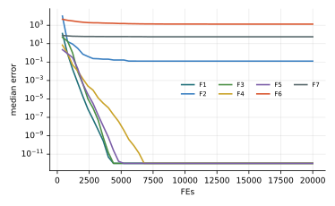

Chương 10 · Mục 10.1Chapter 10 · Section 10.1
Tối ưu đàn cá voiWhale Optimization AlgorithmWhale Optimization Algorithm — WOAWOA — catching prey with a net of bubbles
Châu Văn Vân · PTITHCM
Mục tiêu bài họcLearning objectives
Sau chương này, bạn có thểAfter this chapter you will be able to
- Mô tả ba hành vi: vây bắt, lưới bong bóng xoắn ốc, tìm mồi.Describe the three behaviours: encircling, spiral bubble net, search.
- Viết phương trình xoắn ốc logarit và quy tắc chọn theo p và |A|.Write the logarithmic spiral and the choice rule by p and |A|.
- Tính xác suất mỗi hành vi theo thời gian.Compute how likely each behaviour is over time.
- So sánh động lực học WOA với GWO và BA (mục 10.4).Compare WOA dynamics with GWO and BA (section 10.4).
Tổng quanOverview
Cá voi lưng gù săn mồi bằng lưới bong bóngHumpback whales hunt with a bubble net
- Do Mirjalili và Lewis đề xuất năm 2016.Proposed by Mirjalili and Lewis in 2016.
- Cá voi lặn xuống bên dưới đàn cá nhỏ, rồi vừa bơi lên theo đường xoắn ốc vừa thả bong bóng.The whale dives below a school of small fish, then swims upward along a spiral while releasing bubbles.
- Vòng bong bóng khép dần thành một “tấm lưới” dồn con mồi lên mặt nước. Dữ liệu gắn thẻ trên 9 con cá voi (300 lần săn) cho thấy chúng lặn khoảng 12 m rồi dùng hai kiểu: xoắn ốc đi lên và vòng đôi.The ring of bubbles tightens into a “net” that herds the prey to the surface. Tag data from 9 whales (300 bubble-net events) show dives of about 12 m followed by two patterns: upward spirals and double loops.
- WOA mô phỏng ba hành vi: vây bắt, tấn công bằng lưới bong bóng và đi tìm mồi.WOA models three behaviours: encircling, the bubble-net attack and searching for prey.
Ý tưởng cốt lõiCore idea
Con cá voi đang ở chỗ tốt nhất được coi là con mồi. Mỗi con khác tung đồng xu: hoặc khép vòng vây thẳng về phía nó, hoặc bơi xoắn ốc quanh nó.The whale at the best spot is treated as the prey. Every other whale flips a coin: either tighten the circle straight toward it, or spiral around it.
Mô hình toán họcMathematical model
Vây bắt: con tốt nhất đóng vai con mồiEncircling: the best whale plays the prey
- X*: vị trí tốt nhất tìm được tới lúc này.: the best position found so far.
- a giảm tuyến tính từ 2 về 0; decreases linearly from 2 to 0; r ~ U(0, 1).
- Công thức giống hệt bước vây bắt của GWO (chương 9); khác biệt nằm ở hai hành vi còn lại.This is the same encircling rule as GWO (chapter 9); the difference lies in the other two behaviours.
Mô hình toán họcMathematical model
Lưới bong bóng: khép vòng hoặc bơi xoắn ốc, mỗi cách 50%Bubble net: shrink or spiral, each with 50% chance
Đường xoắn ốc nối cá voi với con mồi:The spiral linking the whale to its prey:
b: hằng số quy định hình dạng xoắn logarit; : constant shaping the logarithmic spiral; l ~ U(−1, 1).
Khám pháExploration
Tìm mồi: khi |A| ≥ 1, đi theo một con ngẫu nhiênSearch: when |A| ≥ 1, follow a random whale
Thay con mồi bằng một con cá voi chọn ngẫu nhiên, nên cá voi bị kéo ra khỏi vùng đang tập trung. Điều này chỉ xảy ra khi |A| ≥ 1, tức chủ yếu ở nửa đầu quá trình.Replacing the prey with a randomly chosen whale pulls the whale away from the crowded region. It only happens when |A| ≥ 1, which is mostly during the first half of the run.
Các bướcSteps
Các bước của WOAWOA step by step
Mirjalili & Lewis (2016); b = 1, a: 2 → 0.Mirjalili & Lewis (2016); b = 1, a: 2 → 0.
- Khởi tạo n cá voi; X* = lời giải tốt nhất.Initialize n whales; X* = best solution.
- Tính a, A, C; rút p ~ U(0, 1), l ~ U(−1, 1).Compute a, A, C; draw p ~ U(0, 1), l ~ U(−1, 1).
- p < 0.5, |A| < 1: vây bắt quanh X*; |A| ≥ 1: bơi theo một cá voi ngẫu nhiên.p < 0.5, |A| < 1: encircle X*; |A| ≥ 1: follow a random whale.
- p ≥ 0.5: bơi xoắn ốc (lưới bong bóng) quanh X*.p ≥ 0.5: spiral (bubble net) around X*.
- Cập nhật X*; lặp đến hết ngân sách.Update X*; repeat until the budget is spent.
2 – 5 vòng lặp chínhmain loop
Thuật toánAlgorithm
Lưu đồFlowchart
Tham sốParameters
Tham số của WOAWOA parameters
| Tham sốParameter | Ý nghĩaMeaning | Giá trị thường dùngTypical value |
|---|---|---|
| a | Giảm tuyến tínhLinearly decreasing | 2 → 0 |
| b | Hình dạng xoắn ốcSpiral shape | 1 |
| p | Chọn vây bắt hay xoắn ốcChoose encircling or spiral | 0.5 (xác suất) |
Thuật toán WOAThe WOA algorithm
Mã giảPseudocode
Ngoài n và T, chỉ thêm hằng số xoắn b, thường lấy bằng 1.Besides n and T, the only extra constant is the spiral shape b, usually 1.
- Khởi tạo n cá voi; X* ← con tốt nhấtInitialize n whales; X* ← the best one
- for t = 1 … T, a = 2 − 2t / T
- for mỗi cá voieach whale: tính A, C, l, pdraw A, C, l, p
- if p < 0.5
- if |A| < 1: vây bắt quanh X*encircle X*
- else: đi theo Xrandfollow Xrand
- else: bơi xoắn ốc quanh X*spiral around X*
- Kẹp trong miền, đánh giá, cập nhật X*Clamp, evaluate, update X*
- return X*
Mô phỏngSimulation
12 cá voi trên cùng địa hình12 whales on the same landscape
Cùng địa hình với các chương khác: vùng đậm là tốt, dấu + là cực tiểu toàn cục. Màu vệt cho biết hành vi vừa chọn.Same landscape as the other chapters: darker is better, + is the global minimum. Trail colours show the behaviour just chosen.
Với cấu hình này, bầy dừng ở một hố cục bộ phía trên bên trái: đúng hạn chế “đa dạng giảm nhanh” nêu ở slide Đánh giá.With this setup the pod settles in a local basin at the upper left: exactly the “diversity drops fast” limitation in the Assessment slide.
Ví dụ tính tayWorked example
Vây bắt và xoắn ốc trong một chiềuEncircling and spiral in one dimension
- a = 1, r1 = 0.75, r2 = 0.5: A = 0.5, C = 1.a = 1, r1 = 0.75, r2 = 0.5: A = 0.5, C = 1.
- X* = 4, X = 2: D = 2, X ← 4 − 0.5 · 2 = 3.X* = 4, X = 2: D = 2, X ← 4 − 0.5 · 2 = 3.
Xoắn ốcSpiral
- X ← D′ ebl cos(2πl) + X*, D′ = |X* − X| = 2.X ← D′ ebl cos(2πl) + X*, D′ = |X* − X| = 2.
- l = −0.5: X ← 2 e−0.5(−1) + 4 = 2.787.l = −0.5: X ← 2 e−0.5(−1) + 4 = 2.787.
Thực nghiệm · WOAExperiment · WOA
Kết quả trên bộ 7 hàm, D = 10, 30 lần chạyResults on the 7-function suite, D = 10, 30 runs
| HàmFunction | Trung bìnhMean | Độ lệchStd | Trung vịMedian | so PSOvs PSO |
|---|---|---|---|---|
| F1 · Sphere | 0 | 0 | 0 | ≈ |
| F2 · Rosenbrock | 9.75e−1 | 2.39e+0 | 1.27e−1 | + |
| F3 · Rastrigin | 0 | 0 | 0 | + |
| F4 · Ackley | 0 | 0 | 0 | + |
| F5 · Griewank | 3.98e−2 | 1.22e−1 | 0 | + |
| F6 · Shifted Sphere | 1.58e+3 | 8.83e+2 | 1.32e+3 | − |
| F7 · Shifted Rastrigin | 5.80e+1 | 1.38e+1 | 5.55e+1 | − |
- Sai số f(xbest) − f* sau 20 000 lần đánh giá; n = 30; tham số mặc định của bài gốc; giá trị < 10−8 ghi là 0.Error f(xbest) − f* after 20,000 evaluations; n = 30; default parameters of the original paper; values < 10−8 shown as 0.
- Cột cuối: Wilcoxon rank-sum với PSO (α = 0.05): + tốt hơn, − kém hơn, ≈ không khác biệt.Last column: Wilcoxon rank-sum vs PSO (α = 0.05): + better, − worse, ≈ no difference.
- Xếp hạng Friedman trung bình: 7.64, đứng thứ 8/18 trong 18 thuật toán của giáo trình.Average Friedman rank: 7.64, position 8/18 among the textbook’s 18 algorithms.
- Thiên lệch gốc tọa độ: trung vị F1 = 0 nhưng F6 (cùng hàm, dịch tâm) = 1.32e+3. Kết quả tốt trên F1 phần lớn do tối ưu nằm tại 0.Origin bias: median F1 = 0 but F6 (same function, shifted) = 1.32e+3. The good F1 result is largely due to the optimum lying at 0.
Thực nghiệm · WOAExperiment · WOA
Đường hội tụ (trung vị 30 lần chạy)Convergence (median of 30 runs)

Mã nguồnSource code
Mã nguồn PythonPython source code
Đoạn trích phần cập nhật chính; tệp đầy đủ có chú thích và tham số mặc định theo bài gốc.Excerpt of the main update; the full file documents the default parameters of the original paper. code/si/algorithms/woa.py
while not prob.done: t += 1 a = 2 - 2 * t / T Xs = prob.best_x.copy() old = X.copy() for i in range(n): A = 2 * a * rng.random() - a C = 2 * rng.random() l = rng.uniform(-1, 1) if rng.random() < 0.5: ref = Xs if abs(A) < 1 else old[rng.integers(n)] X[i] = ref - A * np.abs(C * ref - X[i]) else: X[i] = np.abs(Xs - X[i]) * np.exp(b * l) * np.cos(2 * np.pi * l) + Xs X = prob.clip(X) prob(X) return prob.best_x, prob.best_f
Chạy lại toàn bộ thực nghiệm: python -m experiments.run_continuous trong thư mục code/ (xem PROTOCOL.md).Reproduce all experiments: python -m experiments.run_continuous inside code/ (see PROTOCOL.md).
Biến thể và ứng dụngVariants and applications
Những hướng mở rộng phổ biếnCommon extensions
WOA hỗn loạnChaotic WOA
Thay số ngẫu nhiên đều bằng ánh xạ hỗn loạn để tăng đa dạng.Replaces uniform random numbers with chaotic maps to boost diversity.
Binary WOA
Dùng hàm chuyển đổi để chạy trên không gian nhị phân, ví dụ chọn đặc trưng.Uses transfer functions to work in binary spaces such as feature selection.
Lai ghépHybrids
Ghép với mô phỏng luyện kim (WOA-SA) hoặc tiến hóa vi phân để tinh chỉnh cục bộ.Combined with simulated annealing (WOA-SA) or differential evolution for local refinement.
Ứng dụngApplications
Thiết kế kết cấu, điều phối năng lượng, tinh chỉnh siêu tham số học máy.Structural design, energy dispatch, machine-learning hyperparameter tuning.
Đánh giáAssessment
Đường xoắn ốc là điểm khác biệt chínhThe spiral is the main difference
Điểm mạnhStrengths
- Ít tham số: chỉ n, T và b.Few parameters: just n, T and b.
- Bước xoắn ốc cho phép tìm kỹ quanh lời giải tốt theo nhiều khoảng cách khác nhau.The spiral step probes around good solutions at many distances.
- Bước theo Xrand giữ khả năng khám phá ở giai đoạn đầu.Following Xrand keeps exploration alive early on.
Hạn chếLimitations
- Một nửa số bước luôn là xoắn ốc quanh X*, nên đa dạng giảm nhanh và dễ kẹt cục bộ.Half of all moves spiral around X*, so diversity drops fast and the swarm can get stuck.
- Giống GWO, phép |·| và lịch giảm a cố định có thể tạo thiên lệch theo hướng tọa độ.Like GWO, the |·| operator and the fixed schedule for a can introduce coordinate-wise bias.
- Hội tụ chậm ở giai đoạn cuối khi cần độ chính xác cao.Slow final convergence when high precision is needed.
Bài tập và thực hànhExercises and labs
Luyện tập: tính tay rồi lập trìnhPractice: by hand, then in code
Bài tập lý thuyếtTheory exercises
- Với X* = 0, X = 1, b = 1, l = −0.5, tính vị trí mới theo đường xoắn.With X* = 0, X = 1, b = 1, l = −0.5, compute the new spiral position.
- Khi a = 2, xác suất một cá voi đi theo Xrand là bao nhiêu? Khi a < 1?With a = 2, how likely is a whale to follow Xrand? And with a < 1?
- WOA và GWO dùng chung phương trình nào, khác nhau ở đâu?Which equation do WOA and GWO share, and where do they differ?
Thực hành Python / MATLABPython / MATLAB labs
- Cài WOA và ghi tỉ lệ ba hành vi theo từng vòng lặp.Implement WOA and log the share of each behaviour per iteration.
- So sánh WOA và GWO trên Rastrigin, Ackley cùng ngân sách, 30 lần chạy, kiểm định Friedman.Compare WOA and GWO on Rastrigin and Ackley under one budget, 30 runs, Friedman test.
- Thử b ∈ {0.5, 1, 2} và nhận xét hình dạng xoắn.Try b ∈ {0.5, 1, 2} and comment on the spiral shape.
Tài liệu tham khảoReferences
Đọc thêm: các bài báo gốcFurther reading: the original papers
- X.-S. Yang, “A New Metaheuristic Bat-Inspired Algorithm,” in Studies in Computational Intelligence, Springer Berlin Heidelberg, 2010, pp. 65–74, doi: 10.1007/978-3-642-12538-6_6.
- J. A. Goldbogen, A. S. Friedlaender, J. Calambokidis, M. F. McKenna, M. Simon, and D. P. Nowacek, “Integrative Approaches to the Study of Baleen Whale Diving Behavior, Feeding Performance, and Foraging Ecology,” BioScience, vol. 63, no. 2, pp. 90–100, 2013, doi: 10.1525/bio.2013.63.2.5.
- S. Mirjalili and A. Lewis, “The Whale Optimization Algorithm,” Advances in Engineering Software, vol. 95, pp. 51–67, 2016, doi: 10.1016/j.advengsoft.2016.01.008.
- M. M. Mafarja and S. Mirjalili, “Hybrid Whale Optimization Algorithm with simulated annealing for feature selection,” Neurocomputing, vol. 260, pp. 302–312, 2017, doi: 10.1016/j.neucom.2017.04.053.
- M. O. Okwu and L. K. Tartibu, Metaheuristic Optimization: Nature-Inspired Algorithms Swarm and Computational Intelligence, Theory and Applications. Springer International Publishing, 2021, doi: 10.1007/978-3-030-61111-8.
- J. Kang and Z. Ma, “Red-Crowned Crane Optimization: A Novel Biomimetic Metaheuristic Algorithm for Engineering Applications,” Biomimetics, vol. 10, no. 9, pp. 565, 2025, doi: 10.3390/biomimetics10090565.
Tóm lạiIn short
Cảm ơn các bạn đã theo dõiThank you for your attention
Châu Văn Vân · PTITHCM · Tài liệu gốc: Mirjalili & Lewis, Advances in Engineering Software 95, 2016Original paper: Mirjalili & Lewis, Advances in Engineering Software 95, 2016